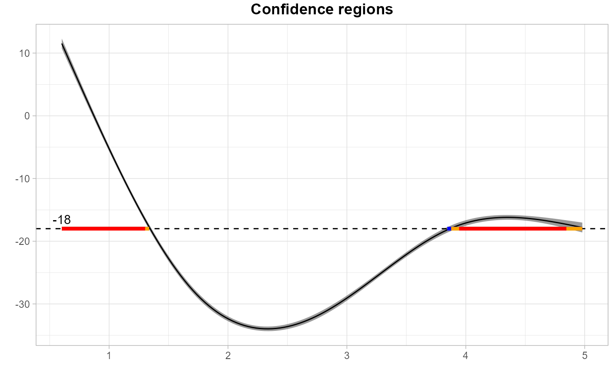

plot_cs.RdVisualizes 1D or 2D inversion of simultaneous confidence sets using contour or band plots. Supports plotting CSs at multiple levels and labeling contours.
plot_cs(
SCB,
levels,
type = "upper",
x,
y,
mu_hat,
mu_true = NULL,
together = T,
xlab = "X1",
ylab = "X2",
level_label = T,
min.size = 5,
palette = "gray",
color_level_label = "black"
)A list returned by SCB_dense() or a custom list with two arrays: scb_up and scb_low, representing the upper and lower confidence bounds respectively.
A numeric vector of scalers specifying the levels to plot the cs.
A character specifying the type of inverse sets to fit. Choices are "upper", "lower" or "interval". Default is "upper".
A vector of x-axis coordinates. For discrete coordinates, use a character vector.
Optional vector of y-axis coordinates, required when the SCB array is 2D.
A matrix or vector of estimated means. If mu_true is provided, this will be overwritten by the true mean.
Optional matrix or vector of true means, which overrides mu_hat if provided.
Logical. If TRUE, plots all confidence levels on the same figure; otherwise, generates one plot per level.
Character. Label for the x-axis.
Character. Label for the y-axis.
Logical. If TRUE, displays numeric level labels on contour lines for 2D confidence sets.
Integer. Minimum number of points required for a contour to be labeled.
Character. Name of the HCL color palette to use when plotting multiple levels together (e.g., "Dynamic").
Character. Color used for contour level labels (e.g., "black").
A ggplot2 object representing the inversion of simultaneous confidence intervals.
# example using ccds data
data(ccds)
ccds_fpca <- prepare_ccds_fpca(ccds)
fosr_mod <- mgcv::bam(percent_change ~ s(seconds, k=30, bs="cr") +
s(seconds, by = use, k=30, bs = "cr") +
s(subject, by = Phi1, bs="re") +
s(subject, by = Phi2, bs="re")+
s(subject, by = Phi3, bs="re") +
s(subject, by = Phi4, bs="re"),
method = "fREML", data = ccds_fpca, discrete = TRUE)
ccds_cma <- SCB_functional_outcome(data = ccds_fpca, object = fosr_mod, method = "cma",
est_mean = TRUE, outcome = "percent_change",
time = "seconds", group_name = "use",
group_value = 1, subject = "subject")
ccds_cma <- tibble::as_tibble(ccds_cma)
plot_cs(ccds_cma,levels = c(-7, -8, -9, -10), x = ccds_cma$time,
mu_hat = ccds_cma$yhat, xlab = "", ylab = "",
level_label = T, min.size = 40, palette = "Spectral",
color_level_label = "black")
#> Warning: Removed 376 rows containing missing values or values outside the scale range
#> (`geom_line()`).
